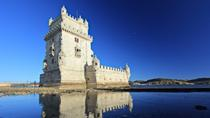
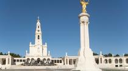
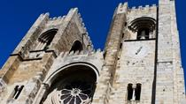
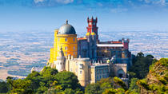
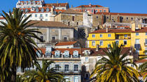
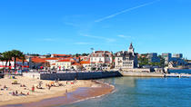

|  | Belem Tower Portugal's caravels sailed off to conquer the great unknown from Belem, and today this leafy riverside precinct is a giant monument to the nation's Age of Discoveries |
|  | Fatima Fatima, located 88 miles (142 kilometers) north of Lisbon is one of the most important shrines to the Virgin Mary in the world. |
|  | Lisbon Cathedral An austere Romanesque building from the outside, the Lisbon Cathedral (Se de Lisboa) has some lovely treasures inside. |
|  | Pena National Palace Technically, UNESCO considers the entire cultural landscape of Sintra the World Heritage Site here, but the crown jewel is the royal Pena National Palace. |
|  | Alfama Wander down (to save your legs) through Alfama's steep, narrow, cobblestoned streets and catch a glimpse of the more traditional side of Lisbon before it too is gentrified. |
|  | Cascais Located west of Lisbon on the Estoril coast, the once-sleepy fishing village of Cascais has become the summer playground of city dwellers, adored for its glorious string of sandy bays and the spanking new marina. |
Project by Yojana